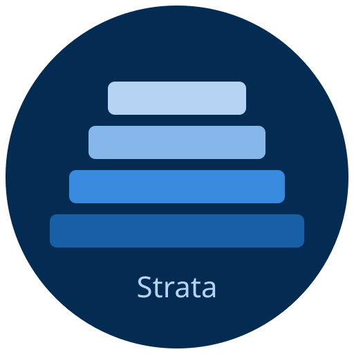
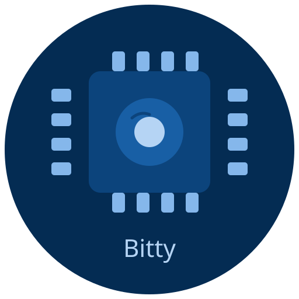

Strata Personal — Built by Boeger Labs

+
Private · Local · Yours
Every document, photo, health record, and piece of paper that passes through your home — organized, searchable, and permanently yours. Paired with Bitty, a local AI who knows your household and wakes up before you do.
No cloud. No subscriptions. No company between you and your own history.
The Problem
Documents buried in boxes. Photos with no context. Health records scattered across apps you don't control. The information exists — you just can't reach it, can't search it, can't ask questions across it.
The Intelligence Layer
Bitty is not a chatbot. She is a household intelligence — proactive, continuously learning, and deeply embedded in how you live. She knows who she's talking to, loads the right context automatically, and keeps the big picture so you don't have to hold it all in your head.
She runs entirely on hardware you own, accessible over your private network from anywhere. No data leaves your machine. No company has access to what she knows. She is warm, direct, and relentlessly honest — and she gets smarter every day as Strata feeds her more of your household's history.
A Day in the Life
Every morning starts the same way. You tap a widget on your phone. That tap is the signal. By the time you read Bitty's message, she's already done the work.
The Data Layer
Five steps from physical paper to a structured, AI-readable archive. No manual filing. No decisions to make. Strata handles it — Bitty reads it.
The Vision
Every document you scan, every photo you ingest, every record you preserve — that's raw material. And raw material compounds. The archive you build now is the one a much more capable AI reasons over later.
The Principle
Everything lives on hardware you own, processed by AI you control, never uploaded to a server you don't.
The archive you build now is the archive a much more powerful AI reasons over later. You're not just organizing your past — you're building a household intelligence that grows with you for the rest of your life.
Get in touch